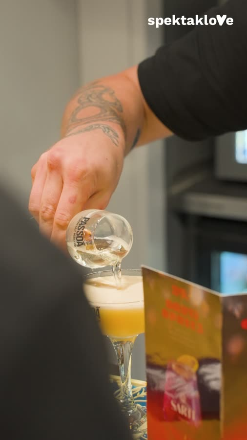
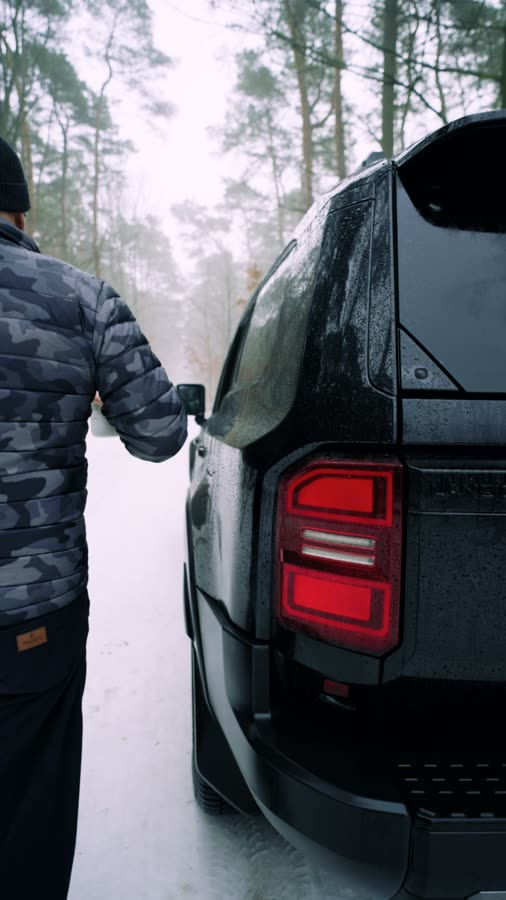
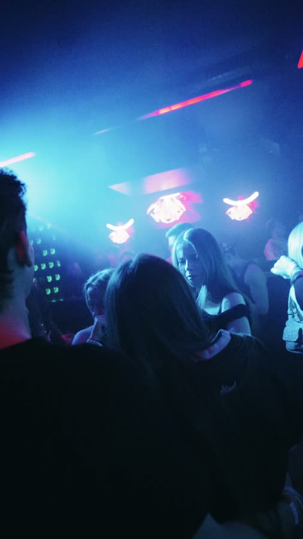

Współpraca
Jak to wygląda w praktyce
Bez tajemnic co do zakresu. Poniżej to, co biorę na siebie, jak wygląda miesiąc pracy i z kim to działa, a z kim nie.



Przebieg
Miesiąc pracy krok po kroku
Ten sam rytm co miesiąc. Przewidywalność jest tu ważniejsza niż efektowność.
Ustalenie kierunku
-
Krok 01
Ustalenie kierunku
Rozmowa o marce, celach i tym, czego nie chcesz. Z tego powstaje kierunek na najbliższe miesiące, nie na najbliższy tydzień.
-
Krok 02
Plan zdjęciowy
Ustalamy terminy i miejsca. Zdjęcia grupuję w bloki, żeby nie zajmować Ci czasu co tydzień.
-
Krok 03
Produkcja
Zdjęcia, montaż, korekta koloru, dźwięk. Materiały powstają z zapasem, nie na styk przed publikacją.
-
Krok 04
Akceptacja i publikacja
Dostajesz gotowe materiały do akceptacji kierunku. Publikacją i harmonogramem zajmuję się ja.
-
Krok 05
Podsumowanie miesiąca
Co zadziałało, co nie, co zmieniamy w kolejnym miesiącu. Bez nerwowych zwrotów po jednym słabszym materiale.
Z kim pracuję
- Firmy, które chcą oddać wideo i social media w całości
- Marki, dla których spójność jest ważniejsza niż chwilowy wynik
- Klienci rozumiejący, że proces wymaga czasu i konsekwencji
- Marki, które mają co pokazać - realny produkt, usługę albo wydarzenie
Z kim nie
- Jednorazowe zlecenia „jeden filmik i zobaczymy"
- Oczekiwanie wyników w dwa tygodnie
- Praca, w której każdy materiał przechodzi przez pięć osób decyzyjnych
- Sytuacje, w których wideo ma zastąpić brak pomysłu na markę
Sprawdźmy dopasowanie
Nie pracuję z każdym. Rozmowa wstępna jest po to, żeby obie strony to sprawdziły, zanim cokolwiek podpiszemy.
Umów rozmowę